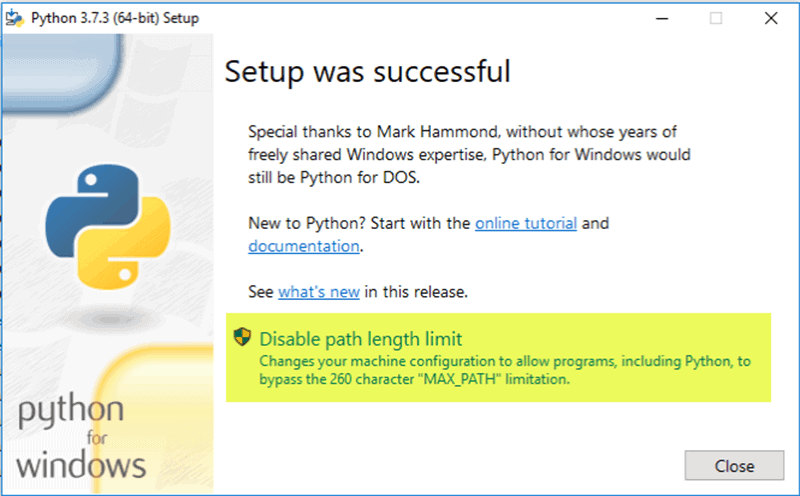

Installation of Python3 in your system
July 27 2020/Sayak Das
Is python3 pre-installed? . . .
As most modern Linux distributions come with Python pre-installed, you have to check it.There are different versions of Python, but the two most popular ones are Python 2.7.x and Python 3.7.x. The x stands for the revision level and could change as new releases come out.
When looking at the version number, there are usually three digits to read:
- the major version
- the minor version
- the micro version
While major releases are not fully compatible, minor releases generally are. Version 3.6.1 should be compatible with 3.7.1 for example. The final digit signifies the latest patches and updates.
Python 2.7 and 3.7 are different applications. Software that’s written in one version often will not work correctly in another version. When using Python, it is essential to know which version an application requires, and which version you have.
Python 2 will stop publishing security updates and patches after 2020. They extended the deadline because of the large number of developers using Python 2.7. Python 3 includes a 2 to 3 utility that helps translate Python 2 code into Python 3.
So please check your pre-installed pyhon version.
How to Check
At first open your terminal (in linux press ctrl + alt + t).In case of windows open command prompt(press windows + R then type cmd).
python --version
If it doesn't work then type
python3 --version
If python3 is pre installed in your system then you will find something like below:
maruti@maruti-Compaq-610:~$ python3 --version
Python 3.8.2
Otherwise you will find something like below:
maruti@maruti-Compaq-610:~$ python3 --version
Command 'python3' not found, did you mean:
command 'python3' from deb python3
command 'python' from deb python-is-python3
maruti@maruti-Compaq-610:~$
Download & Installation . . .
If python3 is not installed in your system you can install it by following some easy step:- If you are using linux OS then just open your terminal by pressing
ctrl + alt + tand type:
sudo apt-get update;
sudo apt-get install python3;
It will install latest version of python3 (i.e. Python 3.8.2 ).For installing a specific older version of python3 (i.e python 3.7 or python3.6 etc...) type
sudo apt-get update;Or,
sudo apt-get install python3.7;
sudo apt-get update;
sudo apt-get install python3.6;
etc..
-
If you are using windows OS then:
- At first download python binary file from the link written below:
https://www.python.org/downloads/ -
Run the Python Installer once downloaded.Make sure you select the Install launcher for all users and Add Python 3.7 to PATH checkboxes.

- The next dialog will prompt you to select whether to Disable path length limit. Choosing this option will allow Python to bypass the 260-character MAX_PATH limit. Effectively, it will enable Python to use long path names.  The Disable path length limit option will not affect any other system settings. Turning it on will resolve potential name length issues that may arise with Python projects developed in Linux.
For additional references please go to the link written below:
https://docs.python.org/3/using/windows.html
- At first download python binary file from the link written below:
- If you are using macOS then go to the link written below:
https://docs.python.org/3/using/mac.html
Introduction to Python Enviorment in Terminal . . .
At first open your terminal (in linux pressctrl + alt + t).In case of windows open command prompt(press windows + R then type cmd).Then type:
python3
In case of windows type:
python
You will find some thing like below:
maruti@maruti-Compaq-610:~$ python3
Python 3.8.2 (default, Apr 27 2020, 15:53:34)
[GCC 9.3.0] on linux
Type "help", "copyright", "credits" or "license" for more information.
>>>
It is Python interpreter. For more details please go through :https://docs.python.org/3/tutorial/interpreter.html
You can exit from here by typing
exit()
maruti@maruti-Compaq-610:~$ python3
Python 3.8.2 (default, Apr 27 2020, 15:53:34)
[GCC 9.3.0] on linux
Type "help", "copyright", "credits" or "license" for more information.
>>> exit()
maruti@maruti-Compaq-610:~$
Using Python Interpreter . . .
Python is an interpreter language. It means it executes the code line by line. Python provides a Python Shell (also known as Python Interactive Shell) which is used to execute a single Python command and get the result. As you can see, a Python Prompt comprising of three Greater Than symbols(>>>) appears. Now, you can enter a single statement and get the result. For example, enter a simple expression like 4 + 5, press enter and it will display the result in the next line.
maruti@maruti-Compaq-610:~$ python3
Python 3.8.2 (default, Apr 27 2020, 15:53:34)
[GCC 9.3.0] on linux
Type "help", "copyright", "credits" or "license" for more information.
>>> 4+5
9
>>> 13*454
5902
>>> 16874/66
255.66666666666666
>>> 8798796578*54786867
482058497878941126
>>> 545-544
1
>>>
You can
input() command to take some data from input device(i.e. keyboard)
maruti@maruti-Compaq-610:~$ python3
Python 3.8.2 (default, Apr 27 2020, 15:53:34)
[GCC 9.3.0] on linux
Type "help", "copyright", "credits" or "license" for more information.
>>> name = input()
Sayak
>>> print("Welcome " + name)
Welcome Sayak
>>> print(name * 5)
SayakSayakSayakSayakSayak
>>>
References: https://docs.python.org/3/tutorial/interpreter.html
Execute Python Script . . .
As you have seen above, Python Shell executes a single statement. To execute multiple statements, create a Python file with extension .py, and write Python scripts (multiple statements).For example, enter the following statement in a text editor such as Notepad(in windows) or nano(in Linux) or whatever.
firstName = input("What is your first name:")
lastName = input("What is your last name:")
print("\n\n!!!Welcome " + firstName + " " + lastName)
Save it as name.py, navigate terminal to the folder where you have saved this file by typing
cd /location/of/folderand execute the python3 name.py [for windows python name.py] command, as shown below. Thus, you can execute Python expressions and commands using Python Shell.
maruti@maruti-Compaq-610:~$ python3 name.py
What is your first name:Sayak
What is your last name:Das
!!!Welcome Sayak Das
maruti@maruti-Compaq-610:~$
Want to Learn?...
Python is a very popular programming language.You can learn it from anywhere.Here I'm giving link of a book which will help you definitely.
Python Crash Course
by
Eric Matthes
. . .